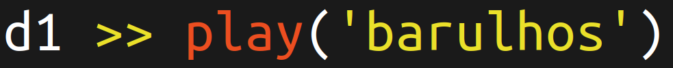
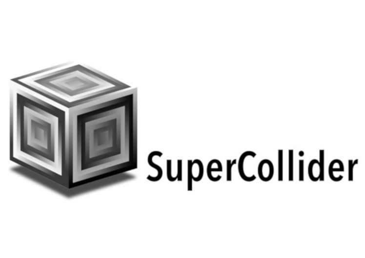
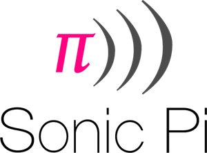
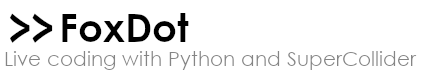

Programação Criativa Musical

berin | Bernardo Fontes
25 de Fevereiro de 2021
### Minha proposta
- Visão geral de **ferramentas**, **comunidades** e **artistas-programadores**
- Mão**S** na massa com **FoxDot**
- Quem quiser, pode adiantar a **[instalação](https://foxdot.org/installation/)** (opcional)
### Programação Criativa para Som
- Muita **diversidade** tecnológica
- Cada ferramenta/biblioteca tem **influência na estética** final
- Pedra fundamental: **SuperCollider**

- Plataforma para síntese de som e composição algorítmica
- Software livre
- scsynth: servidor para processar o som em tempo real
- sclang: linguagem interpretada para operar o servidor
- scide: IDE com vários facilitadores
- sc3-plugins: repositório colaborativo de UGens (unit generator) criados pela comunidade
- Utilizado por várias outras tecnologias para a prática de live coding
### Exemplo de código
```
// modulate a sine frequency and a noise amplitude with another sine
// whose frequency depends on the horizontal mouse pointer position
// and pink noise depends on the vertical
{
var x = SinOsc.ar(MouseX.kr(1, 100));
var y = SinOsc.ar(MouseY.kr(1, 100));
SinOsc.ar(300 * x + 800, 0, 0.1)
+
PinkNoise.ar(0.1 * y + 0.1)
}.play;
```
Opiniões e visões
- Muito verstátil e poderoso
- Comunidade ativa
- Excelente para se explorar timbres únicos
- Linguagem de programação que utiliza muito símbolos e isso pode ser confuso
- Operacional relativamente complexo para prática de live coding
- Artistas-programadores: Gil Fuser (São Paulo), bgola (Brasil/Berlim)
### Em cima do SuperCollider
- SonicPi
- TidalCycles
- **FoxDot**

- Instalação e experimentação são bem fáceis
- Muito material e tutoriais de qualidade (mehackit!!!)
- Fácil adaptação de notações da teoria da música para o código
- Artistas-programadores: Sam Aaron (criador) e Bitkids
- Comunidade muito ativa e com excelente fórum (Tidal Club)
- Linguagem minimalista favorece muito a prática de live coding
- Bastante fundamentado no uso de samples
- Escrito em Haskel, mas bem mais simplificado e acessível
- Artistas-programadores: yaxu | Alex McLean (criador), djalgoritmo, Ghales e beise.
### Exemplo de código
```
d1 $ sound "bd sd:1"
d2 $ sound "hh hh hh hh"
d3 $ sound "arpy"
```

- Escrito em Python ❤️
- Meio campo entre minimalismo experimental e notação musical "clássica"
- Já vem com um amplo conjunto de sintetizadores e samples próprios
- Fácil extensão e, por conta disso, existem vários forks do projeto
- Artistas-programadores: Qirky | Ryan Kirkbride (criador), CrashServer e Pietro Bapthysthe
- É o que vamos experimentar!
### Comunidades e Eventos
- [TOPLAP](https://toplap.org/) - organização de 2004 para promover o Live Coding
- Movimento das [Algoraves](https://algorave.com/)
- [Algorave Brasil](https://algoravebrasil.ml/)
- [CLiC](https://colectivo-de-livecoders.gitlab.io/) - Colectivo de Live Coders (Argentina)
- [flok.click.cf](https://flok.clic.cf/) - nó criado pelo CLiC utilizando o projeto [flok](https://github.com/munshkr/flok)
## **Bora fazer um som!!!**